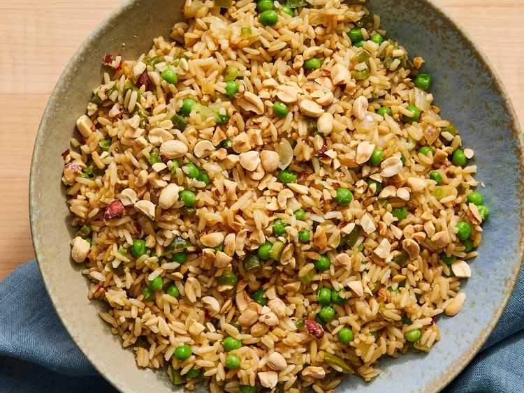

Vegetable Fried Rice

Description
This vegetable fried rice combines the
nutty flavor of brown rice with the fresh
taste of bell peppers, baby peas, and other
vegetables.
Ingredients
- 3 cups water
- 1½ cups quick-cooking brown rice
- 2 tablespoons peanut
- 1 small yelow onion, chopped
- 1 teaspoon minced garlic
- ¼ teaspoon red pepper flakes
- 3 green onions, thinly sliced
- 3 tablespoons soy sauce
- 1 cup frozen petite peas
- 2 teaspoons sesame oil
- ¼ cup roasted peanuts (Optional)
Steps
- Bring water to a boil in a saucepan. Stir in rice. Reduce heat,
cover, and simmer until liquid is absorbed, about 20 minutes. Set aside.
- Heat peanut oil in a large skillet or wok over medium heat.
Add onions, bell pepper, garlic, and red pepper flakes.
Cook, stirring occasionally, for 3 minutes.
- Increase heat to medium-high. Stir in cooked rice, green onions, and soy sauce;
cook and stir for 1 minute. Add peas and cook 1 minute more.
- Remove from heat. Stir in sesame oil and garnish with peanuts.